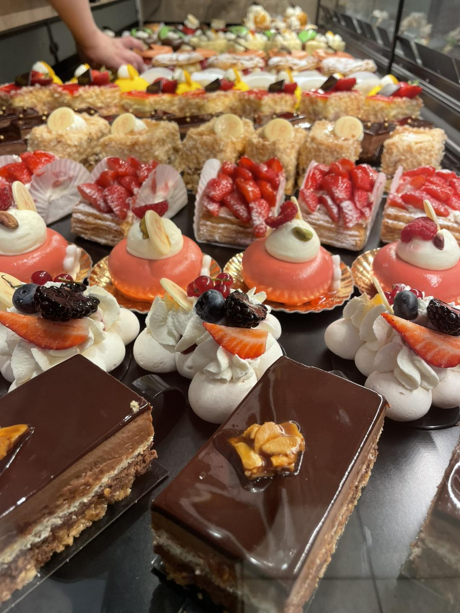

Pains & viennoiseries
Le coeur du quotidien, les habitudes du matin et les premiers achats.
ExplorerUne lecture proche d'un portfolio : chaque famille a sa propre image, sa promesse et sa page detail.

Le coeur du quotidien, les habitudes du matin et les premiers achats.
Explorer
Une offre salee pensee pour les pauses dejeuner et les passages rapides.
Explorer
Des desserts de vitrine qui portent l'image la plus gourmande de la maison.
Explorer
Gourmandises, gateaux et creations a recuperer pour un moment particulier.
Voir aussi
Une facette plus festive, mise en avant comme une collection signature.
Voir la page detail
Une categorie claire pour les visiteurs qui veulent aller droit a l'essentiel.
Commander ou appeler